外部邮箱
功能描述：用户登录后可以对自己外部邮箱账号进行配置和管理，以进行收发外部邮箱账号的邮件。
操作指导：
如果当前没有账号配置，点击配置邮箱返回外部邮箱配置添加账号。
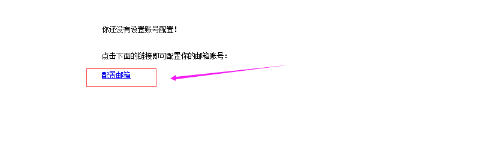
界面展示：
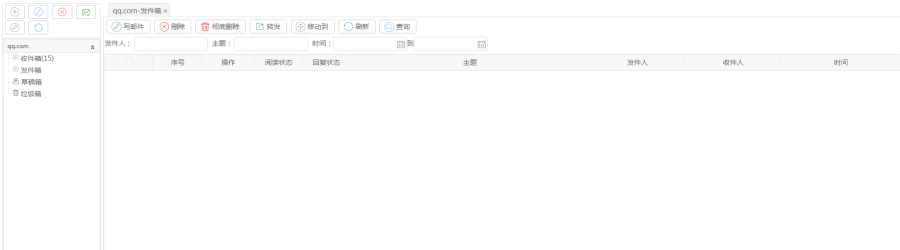
【说明】
添加账号配置：添加外部邮件账号
编辑账号配置：编辑选择的账号
收取选中账号的邮件：收取选中账号的邮件
写邮件：编写邮件发送邮件
发邮件：编写邮件发送邮件
右边列表删除：移动到草稿箱文件夹
彻底删除：彻底删除邮件
转发：把邮件转发给其他人
移动到：把邮件移动到其他文件夹，比如：从收件箱移动到草稿箱
查询：根据查询框条件查询邮件
操作指导：
【收取选中账号的邮件】
操作：点击收取选中账号的邮件按键。
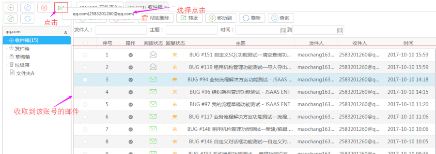
【用户创建邮箱文件夹分类邮件】
操作：右键选中目录节点，允许用户对邮箱目录新建，删除，编辑操作。
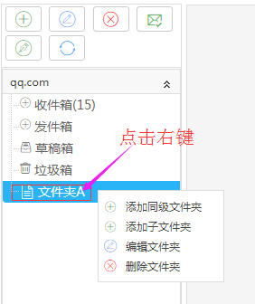
【添加同级文件夹】
操作：自定义填写文件夹名称，点击保存即可（注：添加子文件夹，编辑文件夹操作相同）。
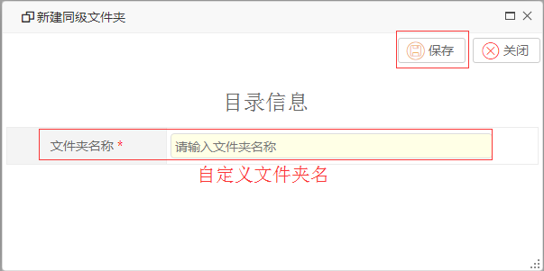
【发邮件】
操作：填写收件人信息，也可以选择通讯录中的邮箱联系人，填写主题，正文内容等，填写完毕即可发送邮件(注:抄送和密送是填写邮箱地址)。
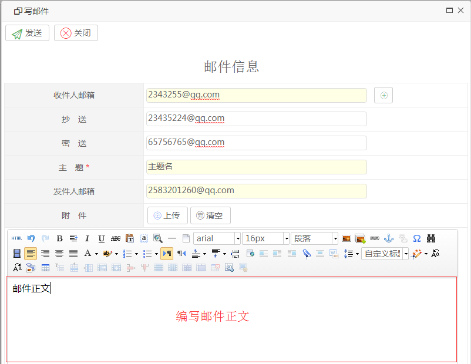
【说明】
收件人邮箱：点击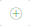 选择收件人
抄送：收取抄送信息的邮箱地址
密送：收取密送信息的邮箱地址
主题：自定义主题名
发件人邮箱：显示当前邮箱地址
附件：可以上传附件
【选择收件人】
操作：选中需要的联系人，点击添加按钮添加收件人地址。
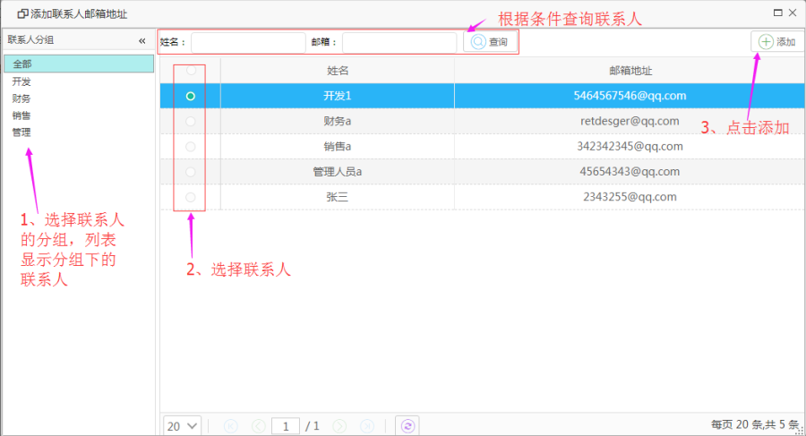
【转发】
操作：选择收件人，点击发送即可。按需求可以编辑抄送密送等。
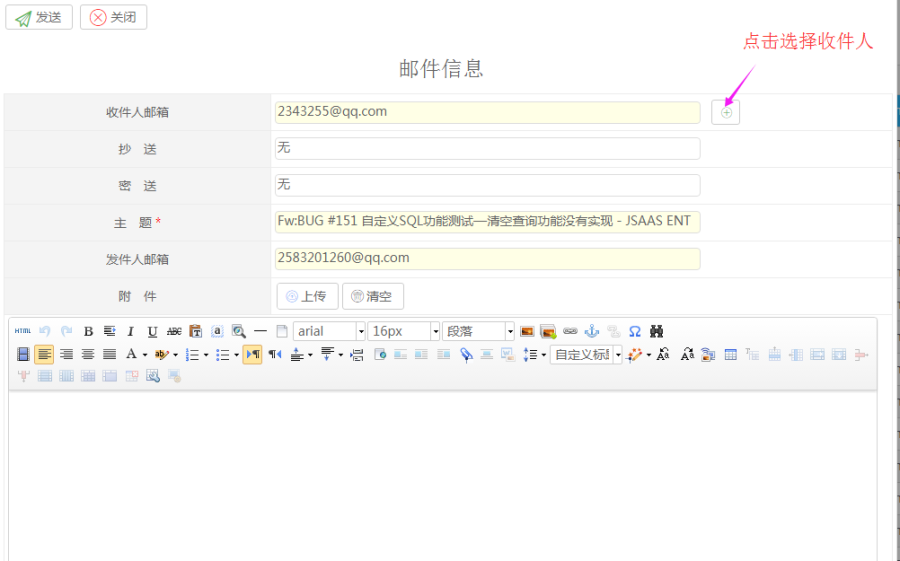
【移动到】
操作：选择要移动的邮件，点击移动到按键，在弹出的界面选择目标目录，点击确定。
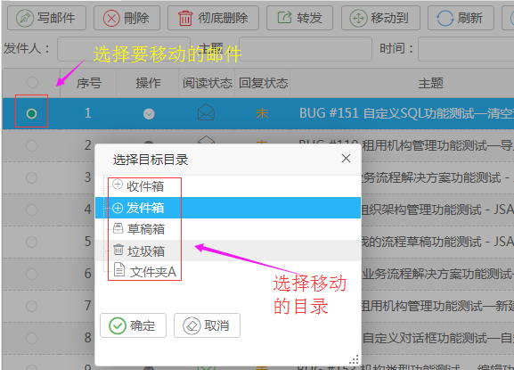
【查看邮件】
可以进行邮箱的添加到草稿，删除，移动邮件到其他分类目录，回复，查看功能。
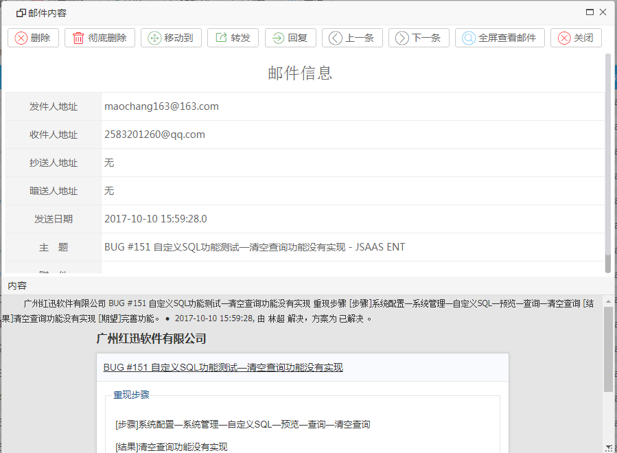
【说明】
删除：把邮件添加到草稿箱
彻底删除：彻底删除邮件
移动到：移动邮件的目录
转发：转发邮件
回复：回复邮件
上一条：查看上一条邮件
下一条：查看下一条邮件
全屏查看邮件：当前窗口全屏查看邮件
关闭：关闭当前界面
【回复】
操作：按需求编写抄送，密送，上传附件；填写回复邮件内容，点击发送。
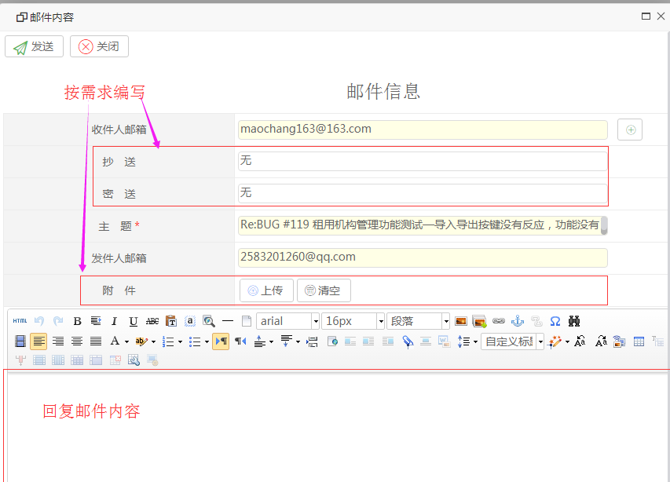